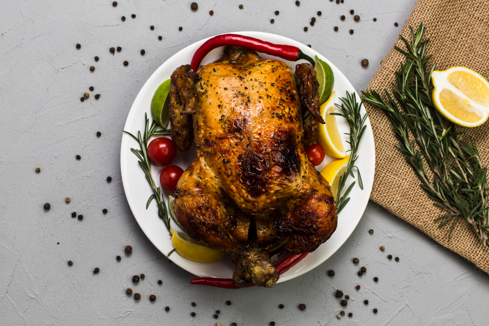

Grilled chicken
Home

Description
This chicken is a whole bird rubbed with a lemon–garlic herb marinade, then roasted (or cooked over indirect grill heat) until the skin turns deeply golden and glossy. You start by patting the chicken very dry, then coating it with olive oil or melted butter mixed with minced garlic, lemon zest, salt, black pepper, and dried herbs like thyme or oregano (a little paprika is optional for extra color). The chicken cooks on a rack so hot air circulates and the skin crisps evenly, with rosemary sprigs and lemon halves roasting alongside so they caramelize and pick up a slightly smoky, charred flavor. Once the meat is fully cooked and juicy, you let it rest, then squeeze the roasted lemon over the top for a bright, fresh finish that balances the rich, savory herbs and browned skin.
Ingredients
- 1 whole chicken
- 2–3 tbsp olive oil or v2 tbsp melted butter + 1 tbsp oil
- 4–6 garlic cloves, minced
- Zest of 1 lemon + 1–2 lemons cut into halves/wedges (for roasting/grilling)
- 1–2 tsp salt (to taste)
- 1 tsp black pepper
- 1–2 tsp dried thyme/oregano (or mixed Italian herbs)
- A few sprigs rosemary (some under/around the chicken, some for serving)
- Optional: 1 tsp paprika (helps with color), pinch chili flakes
Steps
-
Prep the chicken
- Pat the chicken very dry with paper towels (this is key for crispy skin).
- Optional: tuck wing tips under, and tie legs with kitchen string for even cooking.
-
Season
- Mix oil/butter + garlic + lemon zest + salt + pepper + herbs (and paprika if using).
- Rub all over the chicken (especially on the breast and legs).
- If you want extra flavor: gently loosen the skin over the breast and rub a little of the mix underneath.
-
Roast
- Heat oven to 220°C for the first blast, then reduce to 190°C.
- Put chicken on a rack over a tray (like the photo vibe), add rosemary sprigs and lemon halves around it.
- Roast until done: usually 60–90 minutes depending on size.
- It’s ready when internal temp is 74°C in the breast and 80–85°C in the thigh, or juices run clear.
-
Rest + finish
- Rest 10–15 minutes before carving.
- Squeeze the roasted/charred lemon over the chicken and serve with rosemary.
Egyption recipe